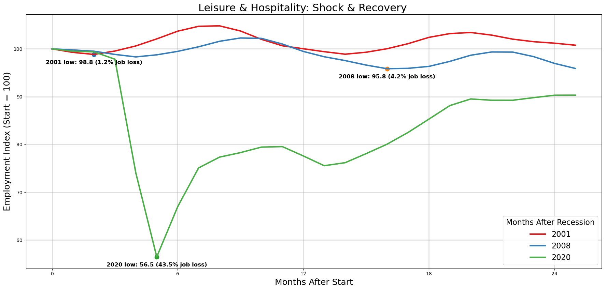
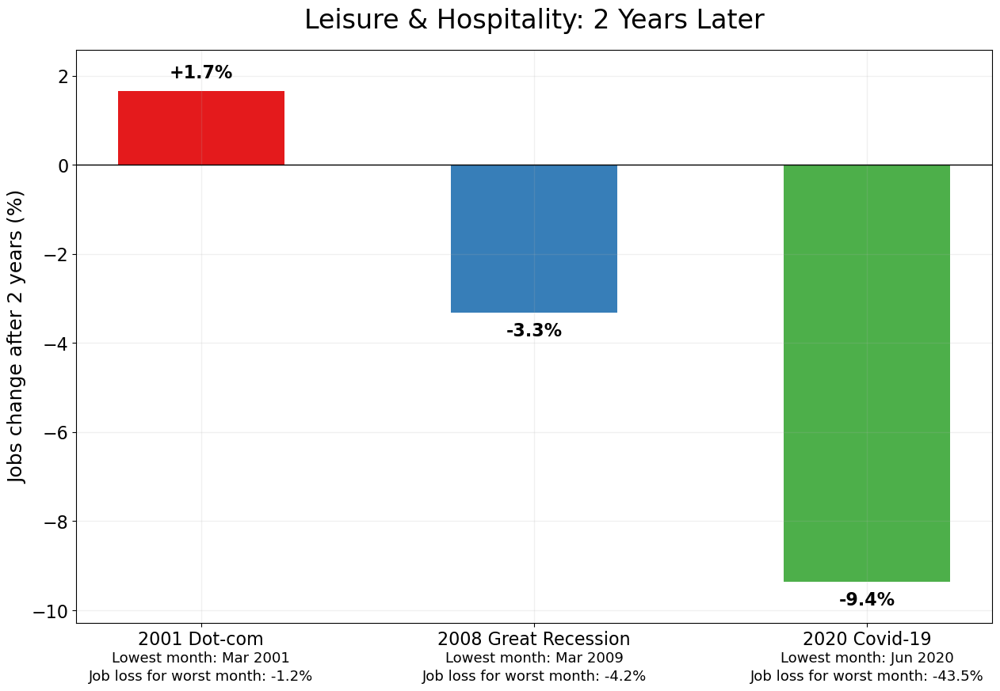

Recessions appear as sudden dips in total employment, and most readers have lived through at least one. These events are shared, memorable disruptions.
The recessions of 2001, 2008, and 2020 were caused by different shocks and produced different patterns of job loss. Some were slow burns; others were sudden free-falls.
Which recession period do you want to select?
Behind the big national trend are dozens of industries, each with its own employment cycle.
Which industry is closest to yours?
Your chosen industry may have collapsed in one recession, boomed through another, or struggled to bounce back. Its story isn’t the same as the broader economy.
After each recession ends, industries settle into new trajectories. Some reinvent themselves and grow beyond pre-recession levels; others stabilize lower.
Every recession leaves a different mark — and the path your industry takes afterward depends on the people, technologies, and choices that shape it.
Which recession recovery period do you want to see?
Would you like to explore another industry?